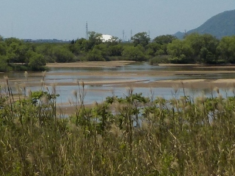
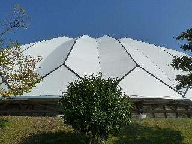

斐伊川越しに出雲ドームを見ました。
2024/05/04

出雲ドームは大きいので、いろんなところから見えますね。
いいんだか、悪いんだか。たぶんいいんだろうな。
島根県出雲市矢野町999
2024/05/04

出雲ドームは大きいので、いろんなところから見えますね。
いいんだか、悪いんだか。たぶんいいんだろうな。
2014/10/25
いい天気なのでお昼ご飯を食べに出雲ドームに行きました。

今日は山陰食の大販売会 第4回山陰しんきんビジネスフェアってのがあり、島根鳥取の食べ物が沢山試食できました。
島根だけじゃなくて、鳥取があるのが良かったです。
これ初めて見た！って感じがあって面白かったです。 そんでもってそれを試食出来るので大満足です。
ぐるっと試食した感想ですが、最近鳥取県にいってないので観光に行きたいって思いました。 出かけた先で買い物するのって楽しいですよね。
観光地のお土産物屋さんや道の駅とか行きたいです。
来年はどこであるかわからないですが、近くだったら是非また行きたいです